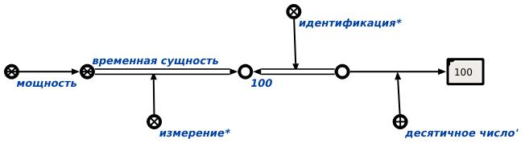

Команда подсчета количества элементов класса предназначена для определения мощности заданного множества. Единственный аргументом команды является абсолютное понятие. Результатом выполнения запроса является вывод на экран мощности данного понятия. Например:
